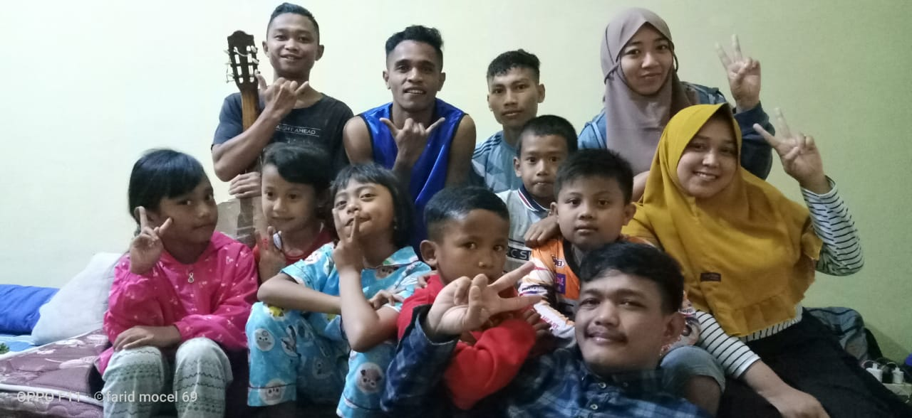

KKN UNIKAMA 2019 ~~~@~~~ Edom TI
Mahasiswa sebagai pengamal dari Tri Darma Perguruan tinggi harus memiliki integritas diri yang tinggi. Dalam berinteraksi bermasyarakat. Ilmu yang diterapkan mahasiswa harus bersinergi antara paradigma yang berlaku dimasyarakat dan penerapan ilmu mahasiswa. Sehingga terjadi berkesinambungan diantaranya. Mahasiswa selaku agent of change and social control cukup potensial dalam pembinaan masyarakat. Mahasiswa IAIN Raden Fatah Palembang sebagai salah satu eksponen pembaharuan bangsa dan pengembangan baru misi intelektual berkewajiban dan bertanggung jawab mengembangkan komitmen keislaman. Kuliah Kerja Nyata (KKN) Mahasiswa IAIN Raden Fatah adalah suatu aktivitas perkuliahan serta sebagai proses pembelajaran, maka spesifikasi kegiatan KKN ini adalah terintegrasinya ketiga pilar Tri Dharma Perguruan Tinggi yaitu Pendidikan, Penelitian dan Pengabdian. Sekaligus didalamnya secara sinergis dan simultan yang meliputi unsur-unsur dasar pendidikan dan pelatihan keterampilan keberagamaan, pengabdian pada masyarakat dengan desain tertentu. Kuliah Kerja Nyata (KKN) Mahasiswa IAIN Raden Fatah Palembang adalah suatu aktivitas perkuliahan sebagai langkah pendidikan keterampilan keberagamaan yang dilaksanakan dalam bentuk pengabdian pada Masyarakat. Sasaran Kuliah Kerja Nyata (KKN) adalah mahasiswa, masyarakat, pemerintah daerah dan lembaga-lembaga pendidikan. Adapun tujuan dari kegiatan Kuliah Kerja Nyata itu sendiri adalah untuk menghasilkan sarjana-sarjana ke Islaman yang menghayati permasalahan dalam masyarakat dalam konteks pembangunan dan memilki kepribadian sebagai kader pembangunan dengan wawasan berfikir yang luas.Kuliah Kerja Nyata (KKN) merupaka salah satu bagian dari kegiatan akademik yang Bersifat sosial aplikatif, mahasiswa akan terjun langsung ke lingkungan masyarakat dan menerapkan ilmu yang sudah di dapatkan di perkuliahan sehingga ilmu yang di peroleh dapat langsung di rasakan manfaatnya baik oleh mahasiswa maupun masyarakat. Kelompok kuliah kerja nyata (KKN) juga merupakan salah satu kegiatan dimana mahasiswa menjunjung tinggi dan mengabdikan tri dharma perguruan tinggi. KKN di harapkan dapat memberikan semangat baru untuk menggerakkan pembangunan desa. Dalam kesempatan ini kelompok kuliah kerja nyata (KKN) kami menemukan beberapa persoalan utama mengenai bagaimana siswa dapat lebih menambah wawasan/ilmu mengenai beberapa mata pelajaran yang belum mereka pahami sepenuhnya. Sehingga kelompok kuliah kerja nyata(KKN)memberikan tips belajar dan cepat memahami dalam setiap mata pelajaran yang mereka pelajari di SDN 01 Suwaru. Tujuan a.Tujuan Umum Kegiatan ini untuk menambah wawasan dan pengetahuan siswa di SDN 01 Swaru agar lebih cepat memahami pelajaran yang mereka terima di sekolah . b.Tujuan Khusus · Membantu siswa di SDN 01 Suwaru agar bisa belajar dengan mudah dan bisa di pahami dengan cepat · Mahasiswa Universitas Kanjuruha Malang memberikan materi tentang mata pelajaran di sekolah kepada siswa SDN 01 Suwaru. Hasil bimbingan belajar kami di SDN 01 Suwaru adalah sebagian besar siswa masih kurang memahami mata pelajaran yang mereka pelajari di sekolah terutama dalam Mata pelajaran Bahasa Inggris, IPS, PPKn, IPA, dan matematika. Oleh karena itu kami sebagai mahasiswa KKN Universitas Kanjuruhan Malang ingin menyelenggerakan program kerja yaitu’’ Kegiatan Bimbel Pada Siswa SDN 01 Suwaru Desa Suwaru Kecamatan Pagelaran Kabupaten Malang . Program kegiatan Bimbingan Belajar ini dapat di katakan berhasil membuat mahasiswa mengerti dan bisa memahami dengan mudah cara belajar yang benar dan tepat , hal ini terbukti dari siswa yang sulit untuk membaca bahasa inggris menjadi lumayan bisa dan seorang siswa yang tidak bisa baca sama sekali menjadi lumayan bisa dan memahami dari tulisan dengan waktu yang singkat.
KKN UNIKAMA 2019 ~~~@~~~ Edom TI